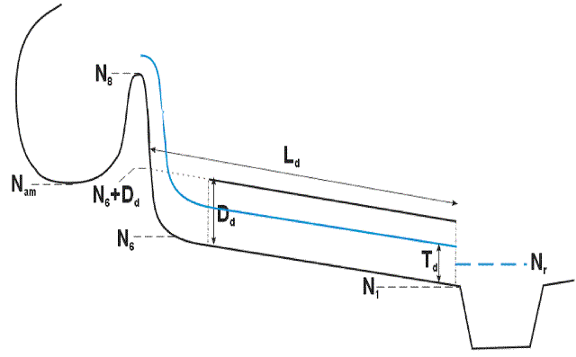

Manuel utilisateur : Les Déversoirs d'Orage
Ce module permet de dimensionner un déversoir latéral à crête haute selon la méthode utilisée dans le logiciel DO développé par la DDAF du Bas-Rhin en 1985 [Giersch - 1985].
L'exemple de calcul de dimensionnement d'un déversoir d'orage qui suit correspond à l'exemple « Démo Déversoir ». Pour l'ouvrir, il faut cliquer sur ouvrir dans le menu « Déversoir » :

ensuite sélectionner « Démo Déversoir » dans la fenêtre qui vient d'apparaître.
et bien sûr cliquer sur le bouton « OK » pour valider votre choix.
Dans ce module, la présentation se fait sous la forme de deux fenêtres :
la fenêtre d'aide dynamique (ci-dessous entourée de rouge),
et la fenêtre de travail (ci-après entourée de bleu).
Sur la figure ci-dessus représentant la fenêtre de travail, on ne distingue cependant pas le tracé graphique. Ce dernier représente le travail en cours à l'échelle.
Le dimensionnement du déversoir se fait par étapes : chacun des 6 onglets représente une étape. Lorsque l'on crée un nouveau travail, au départ, seul l'onglet « Bassin Versant » est disponible. Pour pouvoir accéder à l'onglet « Contraintes », il faut avoir rempli correctement l'ensemble des champs. Il en va de même pour les autres onglets.
Dans cet onglet, il faut saisir trois débits :
le débit d'eau pluviale (en général le débit d'orage),
le débit de temps sec,
et le débit de référence.
On a la possibilité de les saisir directement ou bien de sélectionner un bassin versant. Pour notre exemple, nous avons utilisé la deuxième solution. Il faut alors cliquer sur le bouton « Sélectionner un bassin versant » : on bascule alors vers le module « Bassin versant ». On peut soit créer un nouveau bassin versant (cf. chapitre « 3.2 »« - »« Les Bassins Versants »), soit ouvrir un travail fait par le passé qu'on a enregistré. Pour notre exemple, nous avons ouvert l'exemple « Démo BV urbain » .
Pour retourner vers le module « Déversoir », il faut cliquer sur le bouton « Retour au déversoir » et valider le transfert de données :
![[Important]](chmicons/important.png) | Important |
|---|---|
Lorsqu'on veut importer des données du module Bassin versant, il faut que le bassin versant soit de type urbain. |
Six champs sont à saisir dans cet onglet. Les valeurs considérées pour notre exemple se trouvent sur cette figure.
Cote de radier obligé amont :
La valeur attribuée à ce champ comme son nom l'indique est la cote du fil d'eau d'arrivée à l'amont du système. Elle est également le point de départ du tracé graphique.
Cote de radier obligé aval :
Cette cote doit correspondre à la cote minimale disponible à l'aval. Elle représente en fait la « pente disponible ». Sur le dessin tracé, une droite verte relie ce point à l'aval et le point de départ défini par la « cote de radier obligé amont » : c'est la pente moyenne disponible.
![[Avertissement]](chmicons/warning.png) | Avertissement |
|---|---|
La cote de radier obligé aval doit être inférieure à la cote de radier obligé amont. En cas contraire, le calcul pour-ra se poursuivre, si finalement la cote de radier aval est inférieure à la « cote de radier obligé aval » une modification du réseau aval sera nécessaire pour réaliser le système déversoir. |
Longueur disponible :
C'est la longueur maximale que peut prendre l'ensemble « canalisation amont - déversoir - canalisation aval ».
| Important |
|---|---|
Si l'ensemble dépasse cette longueur un message d'alerte est donné. L'utilisateur doit alors modifier soit la longueur disponible donnée en contraintes soit adapter les longueurs des éléments constitutifs du système (canalisation amont, déversoir ou canalisation étranglée aval) |
Cote des PHE à l'exutoire :
Cette valeur indique le niveau des plus hautes eaux à l'exutoire (cf. 3.7.8 - Onglet « Décharge » ).
Cote de radier obligé à l'exutoire :
Cette cote représente la cote aval de la conduite de décharge (cf. 3.7.8 - Onglet « Décharge » ).
Longueur de la canalisation de décharge (cf. 3.7.8 - Onglet « Décharge » ).
La figure ci-dessous est le tracé graphique obtenu avec notre exemple de dimensionnement de déversoir (cf. « 3.7.7.3 »« - »« Options du tracé graphique » ).
La figure ci-dessous est le tracé graphique réservé à l'onglet « Décharge » obtenu avec notre exemple de dimensionnement de déversoir(cf. « 3.7.7.3 »« - »« Options du tracé graphique » ).
Dans cet onglet, il faut saisir les caractéristiques géométriques de la canalisation amont :
Diamètre en mm,
Pente en 10000ème,
Coefficient de Strickler,
Longueur en m.
| Avertissement |
|---|---|
Le débit à pleine section doit être supérieur au débit d'orage, autrement dit, la conduite doit être capable de transiter le débit d'orage sans se mettre en charge. |
| Important |
|---|---|
Le régime d'écoulement dans la canalisation amont doit être fluvial. |
En cliquant sur le bouton « Courbe », une fenêtre apparaît, et on peut apercevoir la courbe de fonctionnement de la conduite en régime permanent et uniforme : le débit en l/s en fonction de la hauteur d'eau en mm.
Dans cet onglet, il faut saisir les caractéristiques géométriques de la canalisation aval :
Diamètre en mm,
Pente en 10000ème,
Coefficient de Strickler,
Longueur en m.
| Avertissement |
|---|---|
Le débit à pleine section doit être supérieur au débit de temps sec, autrement dit, la conduite doit être capable de transiter le débit de temps sec sans se mettre en charge. |
En cliquant sur le bouton « Courbe », une fenêtre apparaît, et on peut apercevoir la courbe de fonctionnement de la conduite en régime permanent et uniforme : le débit en l/s en fonction de la hauteur d'eau en mm.

Dès que l'ensemble des champs de l'onglet « Canal Aval » a été correctement rempli, on peut accéder à l'onglet « Déversoir ». Il faut renseigner Hydrouti sur quatre valeurs ; soit on les saisit manuellement, soit on clique sur le bouton « Calculer ». Dans ce dernier cas, Hydrouti remplit les champs automatiquement avec des valeurs par défaut puis effectue le calcul de longueur étranglée :
la longueur du DO :La longueur prise par défaut est donné par la formule ci-dessous ; le résultat est arrondi au décimètre près.
la hauteur de la crête :
La hauteur de la crête fixée par rapport au fil d'eau d'arrivée de la canalisation amont ; par défaut on retient généralement la valeur ci-dessous.
la pente du DO :
La pente du déversoir qu'Hydrouti choisit par défaut est égale à 1%.
le tirant d'eau amont admissible :
Le tirant d'eau admissible à l'amont intervient dans la procédure de vérification du fonctionnement du déversoir pour le débit d'orage (cf. « 3.7.7.2 »« - »« Vérification du fonctionnement pour le débit d'orage » ).
Pour notre exemple, nous avons choisi des valeurs légèrement différentes de celles proposées par Hydrouti :
Les résultats de calcul de longueur étranglée sont les suivants :

Hydrouti calcule la longueur de la conduite aval étranglée qui doit assurer un niveau d'eau affleurant la crête (limite du déversement) pour le débit de référence. Cette situation conduit à la formulation suivante :
Les termes de vitesse et de pente motrice sont exprimés pour le débit de référence.
|
Hcrête |
la hauteur de crête en m |
|
IDO |
la pente du radier du déversoir en m/m |
|
LDO |
la longueur du déversoir en m |
|
a |
le coefficient d'entonnement |
|
Vaval |
la vitesse à l'entrée de la conduite aval étranglée en m/s |
|
Daval |
le diamètre de la conduite aval étranglée en m |
|
Imot |
la pente motrice ou perte de charge linéaire en m/m |
|
Irad |
la pente du radier de la conduite aval étranglée en m/m |
|
|
1.0 |
1.2 |
1.4 |
1.6 |
1.8 |
2.0 |
3.0 |
5.0 |
|
a |
0.40 |
0.75 |
0.95 |
1.10 |
1.15 |
1.20 |
1.35 |
1.45 |
Le résultat est une longueur de 19,80 mètres. Dans ce calcul, on ne tient pas compte de la longueur de la canalisation saisie dans l'onglet « Canal. Aval ».
Il y a alors deux possibilités :
soit la longueur saisie précédemment est égale à la longueur calculée :
Dans ce cas, le déversoir est pour l'instant correctement dimensionné ; on peut alors passer à la vérification du fonctionnement du déversoir pour le débit d'orage.
soit elle ne l'est pas :
Il faut alors ajuster les caractéristiques du déversoir et refaire le calcul jusqu'à obtenir une longueur calculée égale à la longueur saisie dans l'onglet « Canal. Aval ».
Il est possible de modifier un des six paramètres pour arriver à ce résultat. Hydrouti propose les modifications adéquates, comme on peut le voir sur la figure précédente :
soit on modifie directement la longueur, et on remplace la longueur saisie dans l'onglet « Canal. Aval » par la longueur calculée,
soit on modifie la pente de la conduite aval étranglée comme indiqué par Hydrouti,
soit on modifie le diamètre de la conduite aval étranglée comme indiqué par Hydrouti,
soit on modifie la hauteur de crête du déversoir comme indiqué par Hydrouti,
soit on modifie la longueur du déversoir comme indiqué par Hydrouti,
soit on modifie la pente du déversoir comme indiqué par Hydrouti.
![[Note]](chmicons/note.png) | Note |
|---|---|
Les propositions de modification d'Hydrouti sont arrondies. Il se peut donc qu'en effectuant une des modifications préconisées par le logiciel, que la longueur étranglée cal-culée ne soit pas égale au centimètre près à la longueur étranglée saisie. Mais le dimensionnement d'une conduite aval étranglée ne se fait pas au centimètre près. |
Une fois que l'ensemble des caractéristiques géométriques du déversoir (mis à part la conduite de décharge) a été déterminé, on peut passer à la vérification du fonctionnement hydraulique du déversoir pour le débit d'orage : il suffit de cliquer sur le bouton « Vérifier ».
Mais avant cela, il faut avoir saisi la valeur du « Tirant d'eau amont admissible » Tram . Cette variable caractérise la hauteur d'eau maximale tolérée dans la canalisation amont ; elle est au minimum égale à la hauteur de remplissage de la canalisation amont pour le débit d'orage mais peut être supérieure si un ressaut est admis en amont du déversoir. Cette valeur conditionne fortement la réussite de la vérification, du fait que celle-ci consiste essentiellement à comparer les niveaux d'énergie disponible et nécessaire.
Dans notre exemple, nous avons choisi Tram admissible= 1.05 m :
On suppose que le débit conservé est égal à 1.3 fois le débit de référence. Cette valeur est la limite de non dépassement habituellement admise; au-delà, on considère que la qualité « hydraulique » du déversoir est insuffisante.
On suppose également que la loi de déversement correspond à la loi de Poleni valable uniquement pour les déversoirs frontaux, et on en déduit une hauteur moyenne de déversement hm pour un déversoir non noyé :
|
Qdév |
débit déversé en l/s |
|
LDO |
la longueur du déversoir en m |
Avec notre exemple, nous trouvons hm ≈ 0,34 m.
On suppose que la ligne d'eau sur le déversoir est rectiligne et qu'elle suit la relation :
Dans notre exemple, la hauteur d'eau à l'amont de la crete Tram s'équilibre à 1,03 m, inférieur au tirant d'eau admissible.
Hamont = Tram - Hcrête ≈ 0,33 m et hm ≈ 0,34 m, donc haval ≈ 0,35 m.
Finalement, le niveau d'énergie nécessaire est égal à :
Haval = haval + Pamont ≈ 1,05 m.
Pour une hauteur égale à Tram et pour le débit d'orage, la vitesse est environ égale à 1,08 m/s. D'où :
De plus, on suppose que la perte de charge linéaire le long de la crête est égale à 0.01 m/m. On peut donc calculer le niveau d'énergie disponible :
On constate que le niveau d'énergie disponible est légèrement supérieur au niveau d'énergie nécessaire ; on peut donc considérer que le système est calé.
Si cela n'avait pas été le cas, nous aurions dû augmenter la longueur du déversoir comme nous l'aurait proposé Hydrouti.
Le débit conservé s'obtient grâce à un calcul itératif. Il faut faire une supposition sur ce débit, puis de la même manière que dans le paragraphe « 5.7.2.1.1. Niveau d'énergie nécessaire », il faut calculer la hauteur hav. On en déduit alors le tirant d'eau taval = haval + Paval.
Il suffit alors de faire un calcul de perte de charge dans la conduite aval étranglée, et vérifier si l'écoulement est à surface libre à la sortie de cette conduite. Pour notre exemple, en supposant un débit conservé de 166 l/s :
|
Perte de charge linéaire |
PDClin ≈ 0.40 m. |
|
Perte de charge singulière |
|
|
Tirant d'eau taval |
taval = haval + Paval ≈ 1.09 m. |
|
Diamètre de la conduite aval |
Daval = 0.30 m. |
On constate bien que taval ≈ PDClin + PDCsing + Daval, le système est donc calé.
Si on avait eu taval > PDClin + PDCsing + Daval, il aurait fallu réitérer ces calculs en considérant un débit déversé plus important.
De façon inverse, si on avait eu taval < PDClin + PDCsing + Daval, il aurait fallu réitérer ces calculs en considérant un débit déversé plus faible.
Hydrouti vérifie que la vitesse dans la conduite amont est supérieure à 0.30 m/s, afin d'éviter la formation de dépôt.
Dans notre exemple, la vitesse est insuffisante ; Hydrouti conseille alors de réduire la hauteur de crête en dessous de 497 mm. Nous avons finalement décidé de conserver une hauteur de crête de 700 mm et de continuer ainsi le dimensionne-ment. Mais nous aurions pu décider d'ajuster la hauteur de crête de façon à ce que la vitesse amont soit supérieure à 0.30 m/s.
![[Attention]](chmicons/caution.png) | Attention |
|---|---|
La modification de la hauteur de crête implique de recommencer le dimensionnement à l'étape du calcul de la longueur de conduite aval étranglée (cf. « 3.7.7.1 »« - »« Calcul de la longueur étranglée » ). |
![[Astuce]](chmicons/tip.png) | Astuce |
|---|---|
Cette condition est relativement contraignante et reste cependant relativement difficile à atteindre. Même si elle n'est pas satisfaite, l'utilisateur peut tout de même passer à la suite du dimensionnement. |
Hydrouti trace le schéma à l'échelle du déversoir. Cette fenêtre graphique apparaît dans les onglets « Canal. Amont », « Canal. Aval », « Déversoir » et « Décharge ». Dans l'onglet « Déversoir », il est possible de personnaliser ce tracé :
Sur la première ligne, on peut sélectionner les informations tracées pour chacun des débits sélectionnés de la dernière ligne.
Dans ce cas, par exemple, Hydrouti va tracer la ligne d'eau, la ligne piézométrique et la ligne d'énergie du débit d'orage.
Dans cet onglet, on traite le dimensionnement de la conduite de décharge, en effectuant une vérification du fonctionnement hydraulique pour le débit d'orage. Pour cela, il faut renseigner le logiciel sur les caractéristiques de cette conduite :
le diamètre en mm,
la pente en 10000ème,
le coefficient de Strickler,
la longueur de la canalisation en m,
et le coefficient de perte de charge à l'entrée de la conduite, qu'on note l.
Hydrouti propose trois valeurs standards pour ce coefficient l :0.75 si l'entrée est en forme de trompette, le départ oblique et s'il y a de bonnes conditions de pente dans la chambre de déversement, 1.00 si les arêtes d'entrées sont vives, le départ oblique et s'il y a de bonnes conditions de pente dans la chambre de déversement et 1.25 si les arêtes d'entrées sont vives, le départ à angle droit ou parallèle à la crête ; mais il est possible de saisir une autre valeur.
Pour notre exemple, nous avons chois les valeurs suivantes :
Les autres paramètres importants pour le calcul de vérification de fonctionnement de la conduite de décharge ont été saisis dans l'onglet « Contraintes » :
Cote des PHE à l'exutoire qu'on note Nr :
Cette valeur indique le niveau des plus hautes eaux à l'exutoire.
Cote de radier obligé à l'exutoire qu'on note N1 :
Cette cote représente la cote aval de la conduite de décharge.
Longueur de la canalisation de décharge qu'on note Ld.
Différents cas peuvent se présenter, la procédure de vérification se fait donc en plusieurs étapes.

Les plus hautes eaux n'ont pas d'influence sur le dispositif.
Il faut ensuite vérifier le régime d'écoulement dans la conduite.
Si le régime est torrentiel :
On compare le niveau d'énergie sur la crête du déversoir disponible et nécessaire.
|
Niveau d'énergie nécessaire |
|
|
Niveau d'énergie disponible |
|
|
Avec |
|
Si Nn < Nd, la conduite de décharge est correctement dimensionnée, sinon il faut modifier les dispositions de la « décharge ».
Si le régime est fluvial :
Il faut veiller à ce que la nappe ne soit pas noyée :
Si Nd < N8 , alors la nappe n'est pas noyée et le dimensionnement de la conduite de décharge est correct. Si-non, il faut recommencer, en changeant les dispositions.
Il se forme alors une courbe de remous. La condition limite à l'aval, c'est à dire le niveau d'eau à prendre en compte, devient Nr :
Td' = Nr - N1.
Hydrouti fait alors un calcul de courbe de remous, afin de savoir ou non si l'influence du niveau des plus hautes eaux se propage jusqu'au droit de la chambre d'entonnement. Si c'est le cas, il faut considérer un nouveau tirant d'eau Td' au droit de la chambre d'entonnement tiré du calcul de courbe de remous, sinon on conserve le tirant d'eau Td.
Ensuite, comme dans le point , on détermine le régime d'écoulement et on effectue les vérifications qui s'en suivent.
La conduite est partiellement en charge et il y a formation d'une courbe de remous. Comme pour le point précédent, Hydrouti calcule la courbe de remous et en déduit le tirant d'eau au droit de la chambre d'entonnement.
Ensuite, comme dans le point , on détermine le régime d'écoulement et on effectue les vérifications qui s'en suivent.
La conduite est entièrement en charge, mais la nappe n'est pas noyée car :
Nr + Ld X Imot + PDCsing < N8 avec